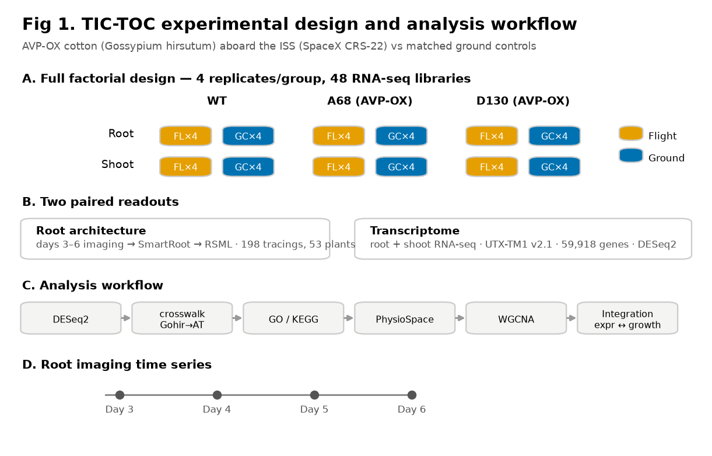
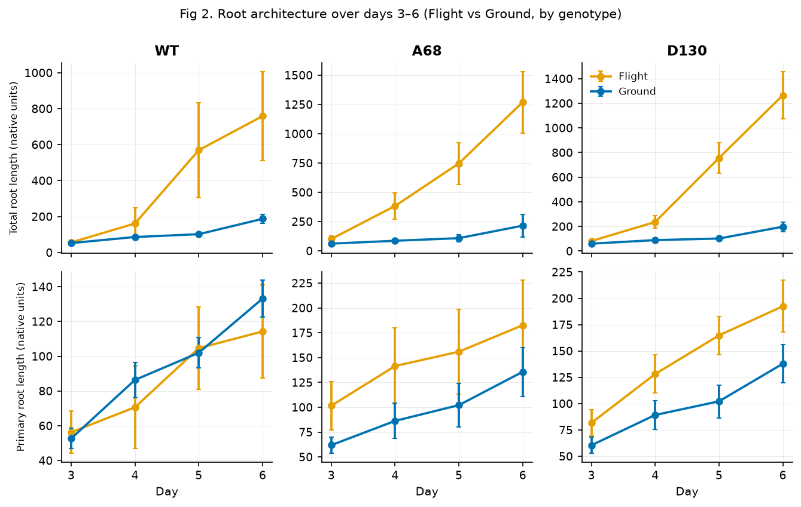
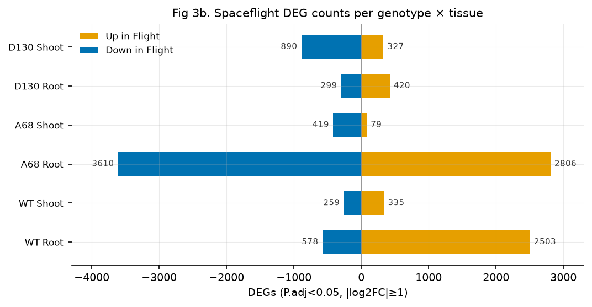
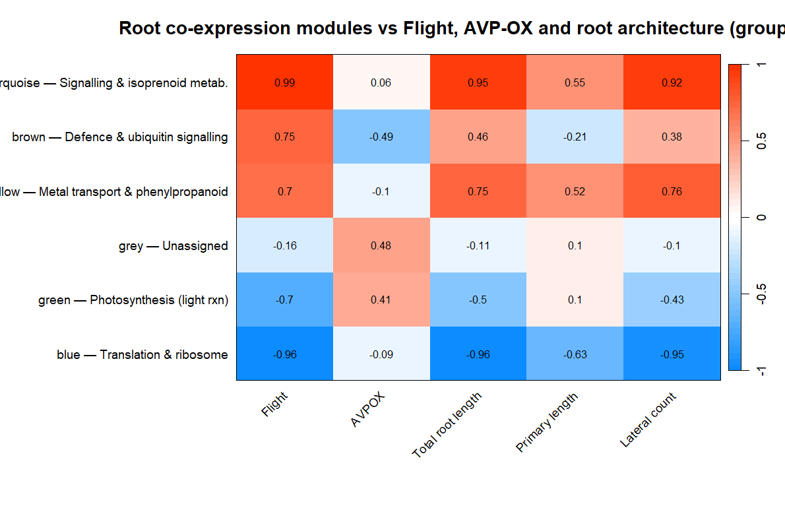
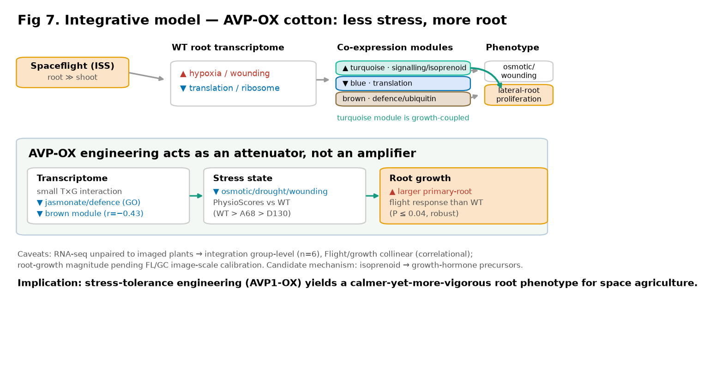

Targeting Improved Cotton Through Orbital Cultivation: root architecture and the root/shoot transcriptome of wild-type and AVP1-overexpressing (AVP-OX) cotton aboard the ISS, analysed through a fully reproducible pipeline.
Supported by four independent analyses:





DESeq2, P.adj < 0.05, |log₂FC| ≥ 1 (ashr-shrunk). Root responds far more than shoot.
| Contrast | Up | Down |
|---|---|---|
| WT · Root | 2503 | 578 |
| A68 (AVP-OX) · Root | 2806 | 3610 |
| D130 (AVP-OX) · Root | 420 | 299 |
| WT · Shoot | 335 | 259 |
| A68 · Shoot | 79 | 419 |
| D130 · Shoot | 327 | 890 |
Every result regenerates from committed scripts (R 4.6; versions in ENVIRONMENT.txt).
Raw reads, count matrices, root images and RSML tracings: NASA OSDR/GeneLab (accession pending; released on publication). Analysis code and derived tables: this repository (data CC0-1.0; code MIT) and a forthcoming Zenodo archive. Grown in the ISS Veggie facility (custom Target Veggie Chambers); ISS National Laboratory (CASIS UA-2018-276) with support from the Target Corporation.